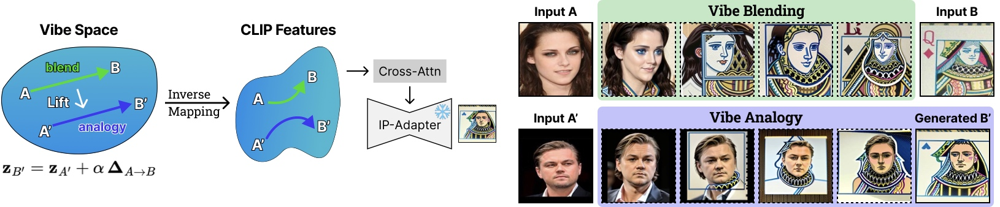
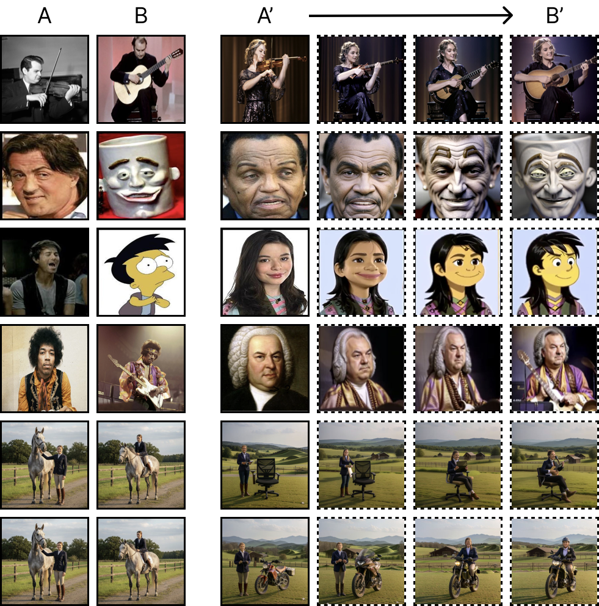
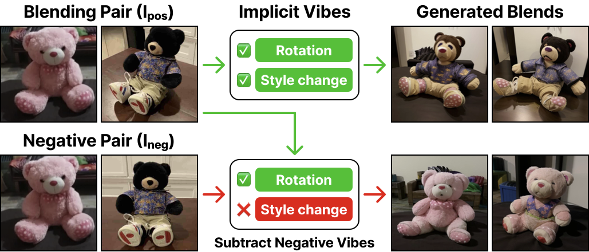
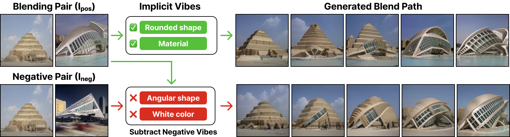
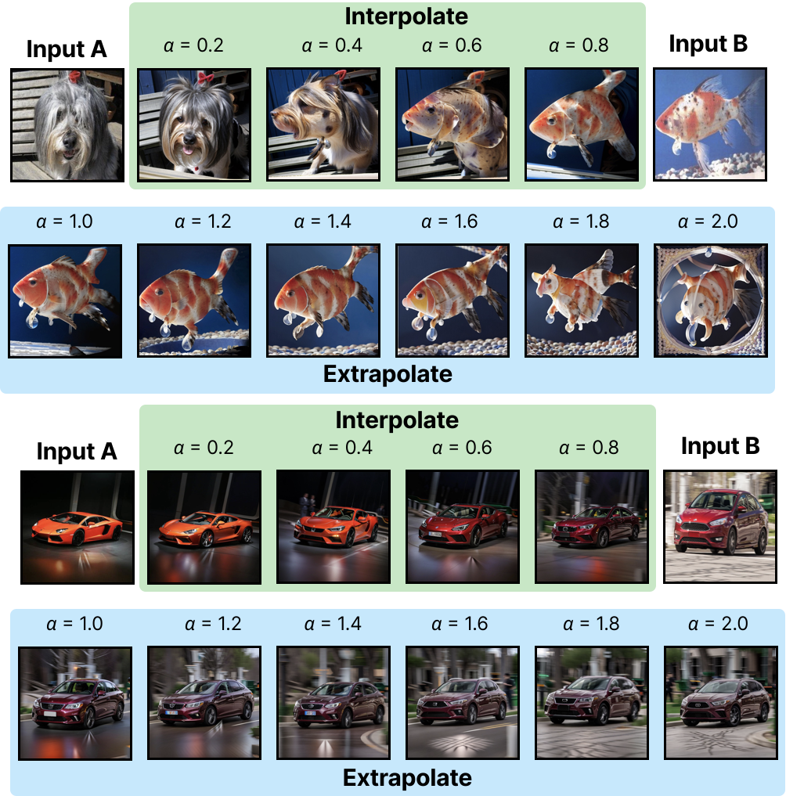
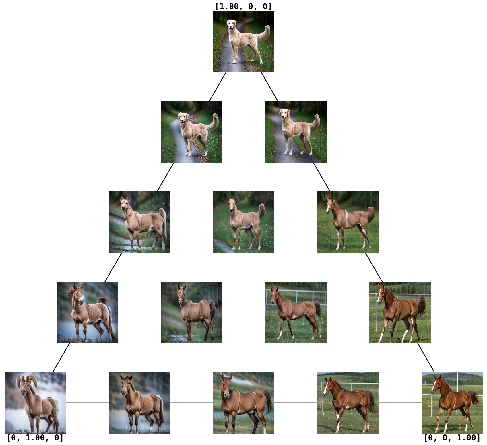

Vibe Space Capabilities
Vibe Space enables a range of creative applications beyond simple interpolation. Below we demonstrate key capabilities that showcase the flexibility and power of discovering semantic manifolds between visual concepts.
Vibe Analogy
With the discovered vibe, we can extrapolate to nontrivial but related concepts, enabling creative analogies that go beyond simple interpolation. For example, we can morph Leonardo DiCaprio's face into a playing card.
 Negative Vibe Control
Vibe attributes are implicitly extracted by Vibe Space. The blending pair defines desired vibes, while negative pairs define vibes to suppress. By subtracting the negative vibe, we can control which attributes are blended.
The blending pair defines desired vibes (rotation + style). The negative pair defines vibes to suppress (style). Blending without negative examples transfers both attributes. Subtracting the negative vibe, only rotation is blended.
Extrapolation
Vibe Space can extrapolate beyond the input images to generate related concepts. By extending the vibe path, we can create novel visual concepts that maintain semantic coherence.
Training with Extra Images
Although two images suffice to train the Vibe Space and identify the dominant attributes, adding related exemplars can enhance the dominant attributes and suppress spurious ones. This allows for more robust blending when dealing with complex scenes or when certain attributes need to be emphasized.

In this example, adding extra images helps the model to learn the dominant attributes (glass texture vs sand texture) and suppress spurious ones (triangle vs round shape). So that the blend can create a pyramid with glass texture.
N-Image Blending
Vibe Space can blend multiple images simultaneously, discovering shared attributes across multiple concepts.
